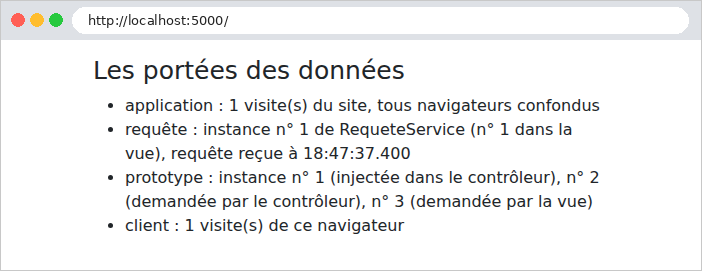

6. Portées des données
Une application web sert de nombreux utilisateurs à la fois, et chacun d'eux enchaîne de nombreuses requêtes. Une donnée peut donc être partagée à trois niveaux, qu'on appelle sa portée :
- la portée application : la donnée est partagée par tous les utilisateurs, pendant toute la vie du serveur (la liste des médecins, par exemple) ;
- la portée requête : la donnée n'existe que le temps de traiter une requête (le modèle d'une vue) ;
- la portée client : la donnée est propre à un utilisateur, et doit survivre d'une requête à la suivante (la langue choisie, l'utilisateur connecté).
Les applications web ont longtemps utilisé pour cette dernière portée la session : une mémoire, tenue par le serveur, propre à chaque navigateur, et retrouvée grâce à un cookie d'identification ([JSESSIONID] en [Java]). [Spring MVC] s'en sert encore par défaut pour les attributs flash (exemple 20). Mais l'étude de cas s'en passe, comme les exemples de ce document (à part les attributs flash de quelques exemples, comme les exemples 20 et 21) : les données de portée client sont gardées par le navigateur, dans des cookies. Le serveur ne garde rien entre deux requêtes d'un même utilisateur : on dit qu'il est sans état ([stateless]). C'est ce qui permet, par exemple, de faire tourner plusieurs serveurs identiques derrière un répartiteur de charge. La contrepartie : un cookie est sous le contrôle de l'utilisateur, qui peut le lire et le modifier. On n'y met donc que des données sans secret, ou des données signées ou chiffrées par le serveur, qui détecte alors toute modification : c'est le cas du jeton d'authentification (chapitre 8).
Côté serveur, les portées application et requête correspondent aux portées des beans de [Spring] (cf. exemple 06). Un bean est créé et gardé par [Spring] ; sa portée dit combien d'instances en sont créées, et pour combien de temps. Trois nous intéressent :
Annotation | Portée | Une instance... |
(aucune) | singleton | pour toute la vie de l'application, partagée par toutes les requêtes. C'est la portée par défaut |
[@RequestScope] | requête | par requête HTTP, partagée par tous ceux qui la demandent pendant cette requête |
[@Scope("prototype")] | prototype | à chaque fois qu'on demande le bean à [Spring] : deux demandes, deux instances |
Ce sont les durées de vie [Singleton], [Scoped] et [Transient] d'[ASP.NET Core]. Il existe aussi une portée session ([@SessionScope]), que nous n'utiliserons pas.
6.1. Exemple 23 : trois portées
Les fichiers [pom.xml], [application.properties], [Exemple23Application.java] et [WebConfig.java] (qui ne fait que servir les fichiers de [Bootstrap]) sont ceux des exemples précédents.
6.1.1. Les trois beans
Le fichier [services/CompteurService.java] :
- ligne 9 : un bean, sans autre précision : c'est un singleton. Son champ [total] est donc de portée application ;
- lignes 14-18 : un serveur web traite plusieurs requêtes en même temps, sur plusieurs fils d'exécution ([threads]). Si deux requêtes exécutent [total++] au même instant, elles peuvent lire toutes deux la même valeur, et une incrémentation est perdue. Un [AtomicInteger] est un entier dont la méthode [incrementAndGet] fait la lecture, l'addition et l'écriture en une seule opération indivisible. Un bean singleton doit toujours se méfier de ces accès simultanés.
Le fichier [services/RequeteService.java] :
- ligne 11 : l'annotation [@RequestScope] donne au bean la portée requête ;
- ligne 15 : un champ [static] appartient à la classe, et non à une instance : il est commun à toutes les instances. Il compte les instances créées ;
- ligne 17 : chaque instance reçoit un numéro à sa création. Le bean étant de portée requête, le numéro change à chaque requête.
Le fichier [services/OutilService.java] :
Le même compteur d'instances, pour un bean de portée [prototype] (ligne 10).
6.1.2. Une donnée de portée requête : les attributs de la requête
Le fichier [config/DebutFilter.java] :
- lignes 17-18 : un filtre de servlet (le chapitre suivant les présente en détail). Il voit passer chaque requête avant [Spring MVC]. La classe [OncePerRequestFilter] de [Spring] garantit qu'il n'est exécuté qu'une fois par requête ; l'annotation [@Component] suffit pour que [Spring Boot] l'ajoute à la chaîne des filtres ;
- ligne 23 : le filtre range l'heure de réception de la requête dans un attribut de la requête. L'objet [HttpServletRequest] contient un dictionnaire d'attributs, qui naît et meurt avec la requête : tout ce qui la traite (filtres, contrôleur, vue) peut y lire et y écrire. C'est l'équivalent de [HttpContext.Items] d'[ASP.NET Core] ;
- ligne 24 : le filtre passe la main à la suite : les autres filtres, puis [Spring MVC].
6.1.3. Le contrôleur
Le fichier [controllers/PorteesController.java] :
Commentons ce code :
- lignes 16-17 : un contrôleur est lui-même un bean, et donc un singleton : [Spring] le crée une seule fois, et lui injecte ses dépendances à ce moment-là, une fois pour toutes (lignes 29-35). C'est là que les choses deviennent intéressantes ;
- ligne 20 : un singleton injecté dans un singleton : rien de particulier ;
- ligne 23 : un bean de portée requête injecté dans un singleton. Au démarrage, il n'y a aucune requête en cours, et donc aucune instance de [RequeteService] à injecter. [Spring] injecte à la place un proxy (un intermédiaire) : un objet qui a les mêmes méthodes que [RequeteService], et qui transmet chaque appel à l'instance de la requête en cours, créée au besoin. C'est ce que fait [@RequestScope] ;
- ligne 25 : un bean prototype injecté dans un singleton. [Spring] crée une instance... une seule, lors de l'injection. Le contrôleur la gardera toute sa vie : ce champ ne change jamais. C'est le piège de la portée prototype : elle ne crée une nouvelle instance qu'à chaque demande au conteneur de [Spring], et un singleton ne demande ses dépendances qu'une fois ;
- ligne 27 : pour obtenir une nouvelle instance à chaque fois, le contrôleur reçoit un [ObjectProvider<OutilService>] : un objet capable de demander un [OutilService] à [Spring] quand on le veut, par sa méthode [getObject()] (ligne 50) ;
- ligne 37 : le modèle de la vue, un record (cf. exemple 03) ;
- ligne 41 : la portée client, un compteur gardé dans un cookie. L'annotation [@CookieValue] lie le paramètre au cookie [mesVisites] envoyé par le navigateur ; [required = false] : le paramètre vaut [null] si le cookie est absent (à la première visite) ;
- ligne 45 : le compteur du navigateur, augmenté de 1. La méthode [versEntier] (lignes 55-61) convertit le texte du cookie en entier ; [Integer.parseInt] lève une [NumberFormatException] si le texte n'est pas un entier, ou s'il vaut [null] : le compteur repart alors de 0 ;
- lignes 46-48 : le cookie est redéposé avec sa nouvelle valeur. [ResponseCookie] est une classe de [Spring] qui fabrique la valeur d'un entête [Set-Cookie] : on enchaîne les méthodes qui en fixent les caractéristiques (chemin, [HttpOnly], [SameSite]), puis [build()] fabrique l'objet. L'entête est ajouté à la réponse par [response.addHeader] ;
- lignes 49-50 : les valeurs sont passées à la vue : le compteur application, le numéro de l'instance de [RequeteService] de la requête en cours, celui du prototype injecté, celui d'un prototype demandé à l'instant, et le compteur client.
6.1.4. La vue
Le fichier [templates/portees/portees.html] :
- ligne 9 : [th:object] (cf. exemples 18 et 19) désigne l'objet [modele] ; les expressions [*{...}] des balises descendantes en désignent les propriétés : [*{total}] vaut [${modele.total}] ;
- ligne 14 : [[[...]]] insère la valeur d'une expression dans le texte, échappée, comme le ferait [th:text] (cf. exemple 14) ;
- lignes 15 et 18 : l'expression [${@nom}] désigne le bean de ce nom (cf. exemple 16). La vue demande à son tour les beans [requeteService] et [outilService] à [Spring], au cours de la même requête que l'action : on va pouvoir comparer les instances reçues par le contrôleur et par la vue ;
- ligne 16 : l'attribut de la requête déposé par le filtre. Pour [Thymeleaf], les attributs de la requête sont des variables comme les autres.
6.1.5. Exécution
Une page, à l'URL http://localhost:5000/ :

Simulons deux navigateurs avec [curl] et deux fichiers de cookies, [a.txt] et [b.txt] : l'option [-b] envoie les cookies du fichier, l'option [-c] y enregistre ceux que dépose le serveur. Le navigateur A fait deux requêtes, puis le navigateur B une, puis A une dernière (le serveur vient d'être relancé) :
(seuls les éléments de la liste sont reproduits). On constate que :
- le compteur application compte toutes les visites : 1, 2, 3, 4 ;
- chaque requête a sa propre instance de [RequeteService] : 1, 2, 3, 4. Au cours d'une requête, le contrôleur (par son proxy) et la vue atteignent la même instance ;
- le prototype injecté dans le contrôleur est toujours le n° 1 : créé au démarrage avec le contrôleur, il ne sera jamais remplacé. Les prototypes demandés sont nouveaux à chaque fois : le contrôleur et la vue en obtiennent deux différents, et chaque requête en crée deux nouveaux ;
- le compteur client est propre à chaque navigateur : A en est à 3 visites, B à 1.
Le fichier [a.txt], tenu par [curl], contient le cookie du navigateur A :
Ce cookie est sous le contrôle du client, qui peut envoyer la valeur qu'il veut :
Pour un compteur de visites, c'est sans importance. Pour une donnée sensible (l'identité de l'utilisateur, son rôle), le serveur doit pouvoir détecter une falsification : le chapitre 8 montre comment.
Une règle découle de ces portées : un bean ne doit pas garder un bean de portée plus courte. Un singleton qui recevrait directement une instance de portée requête la garderait pour toujours, bien au-delà de la requête pour laquelle elle a été créée. [ASP.NET Core] vérifie cette règle au démarrage, en mode développement, et refuse de démarrer si elle est violée. [Spring] procède autrement : pour la portée requête, [@RequestScope] fait injecter un proxy, qui rend l'injection sans danger ; pour la portée prototype, il ne vérifie rien, et l'on vient de voir le résultat : un « prototype » qui se comporte comme un singleton. Quand on veut réellement une nouvelle instance, on la demande à [Spring] par un [ObjectProvider].
Dans l'étude de cas :
Portée | Données | Où ? |
application | listes des médecins et des clients, dictionnaires, captchas en attente, compteurs de tentatives | beans singletons ([ApplicationModel], [Traducteur], [CaptchaService], [LimiteurTentativesService]...) ; la couche métier et l'accès aux données sont eux aussi des singletons, sans état |
requête | modèle des vues, utilisateur connecté | le modèle ([Model]), complété par [ModeleCommun] ; le contexte de sécurité de [Spring Security] |
client | jeton d'authentification, langue, message flash | cookies |